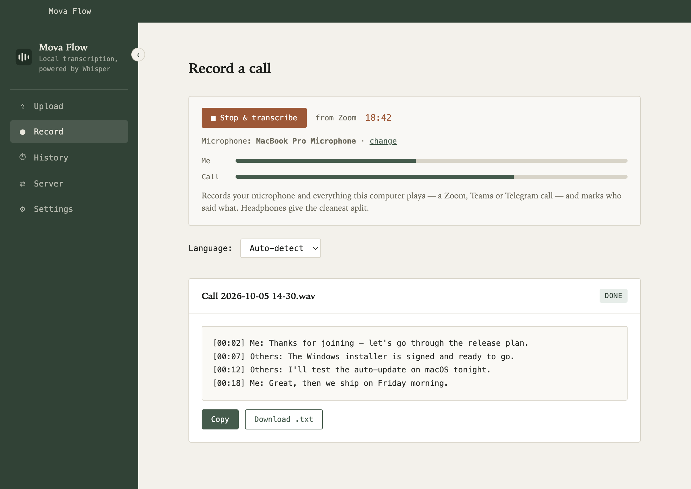
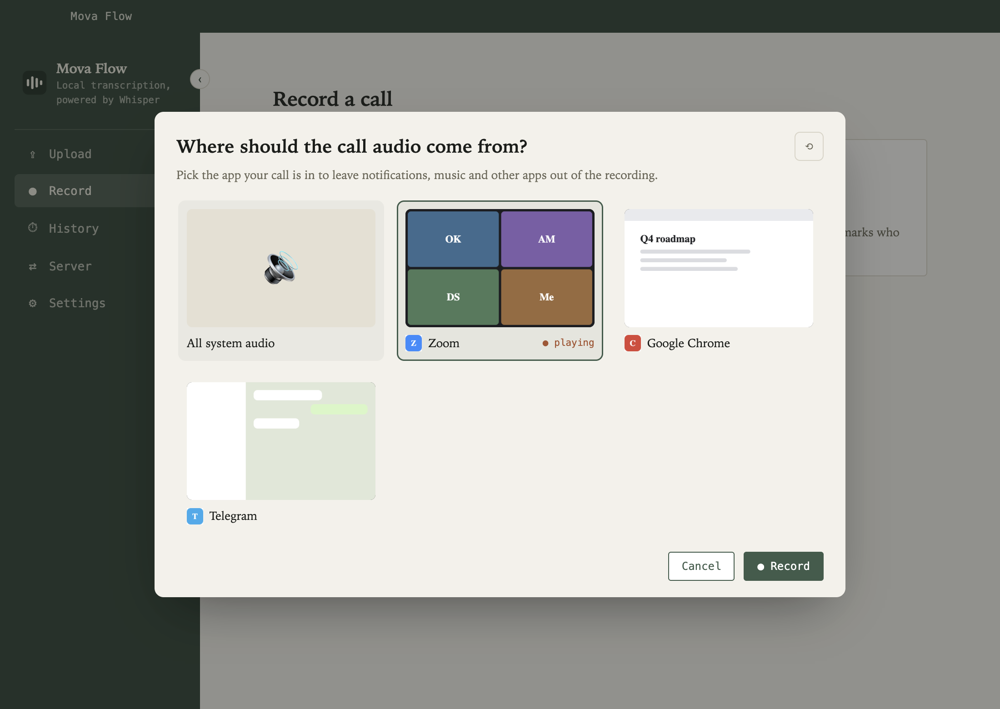
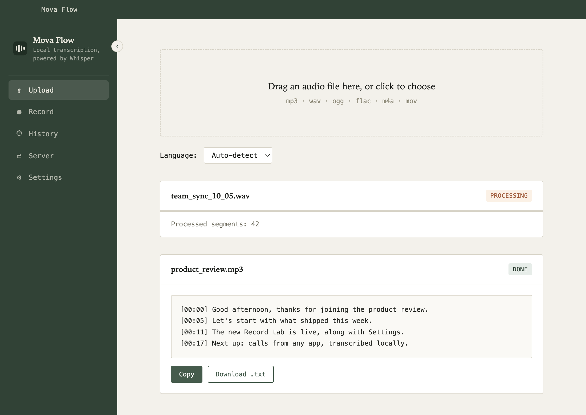
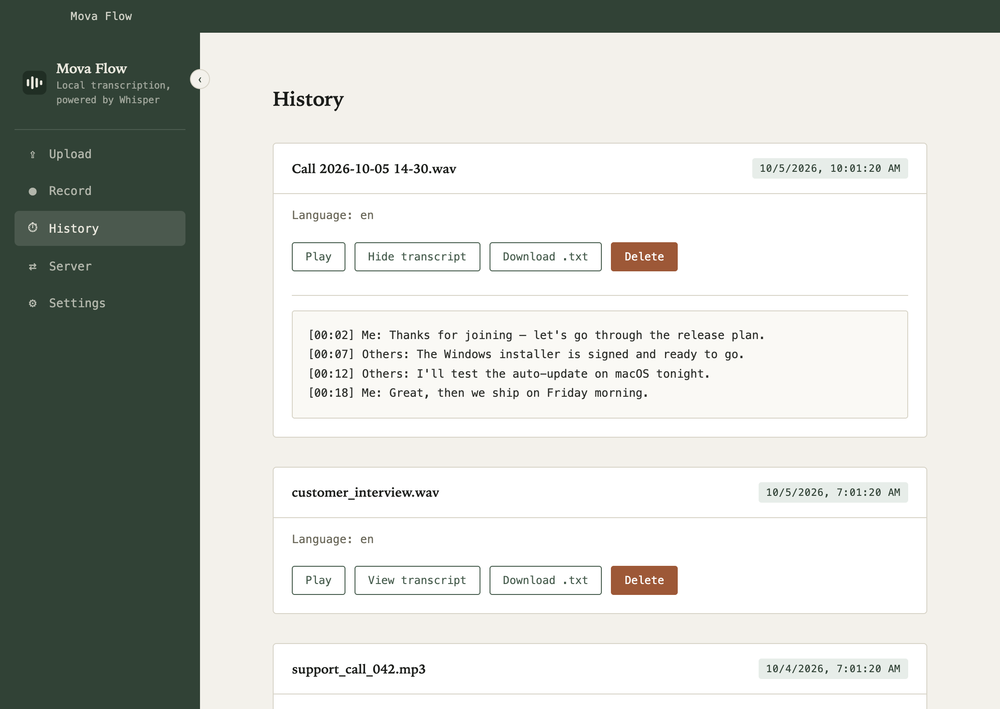
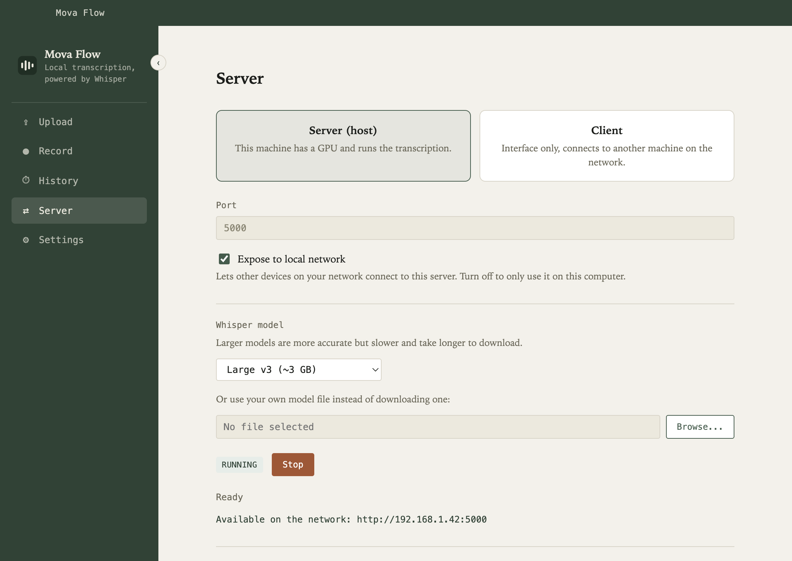
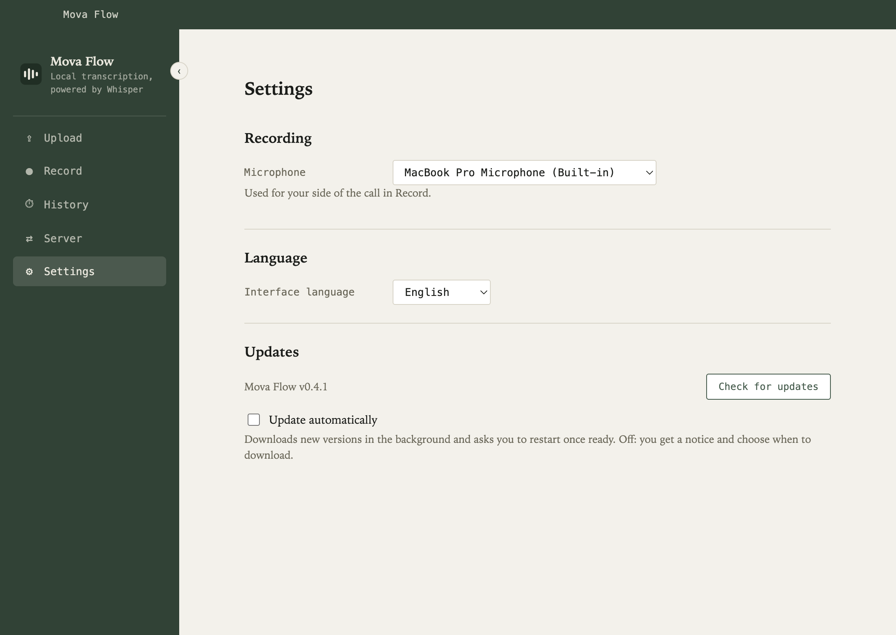
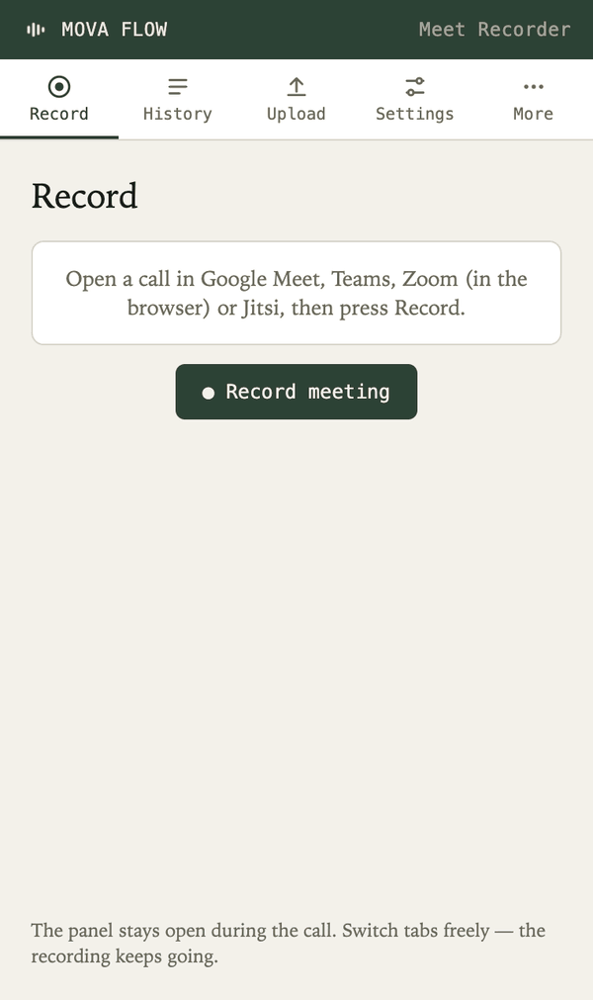
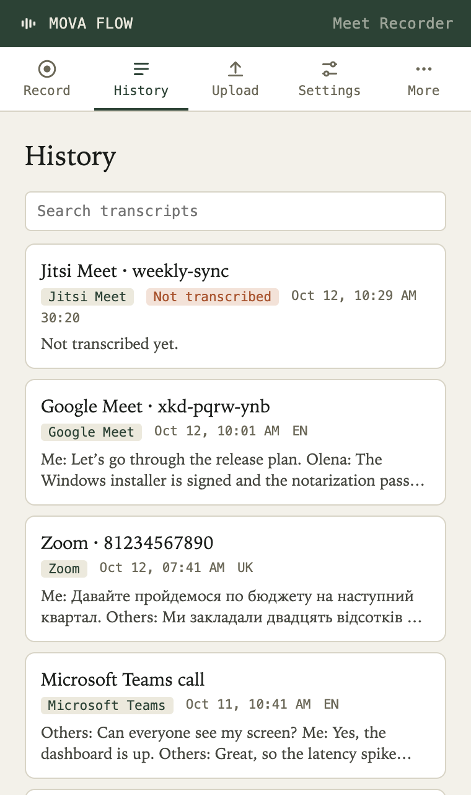

your system
Windows
Full app — the GPU host (CUDA or CPU) and the client. Windows 10 and 11.
↓ Download for Windows Mova-Flow-Setup-<version>.exeIf SmartScreen warns you: “More info” → “Run anyway”.
Mova Flow records Zoom, Teams, Telegram and Google Meet and turns them into transcripts that say who said what — with Whisper running on your hardware. No cloud, no subscription, nothing leaves your network.
The Meet Recorder extension records Google Meet, Microsoft Teams, Zoom and Jitsi right in the browser — a Record button sits in each call's own controls. It hands the recording to the Mova Flow app on the same computer, which transcribes it.
The desktop app records Zoom, Teams and Telegram; the extension records calls in the browser and hands them to the app. Everything goes to the same host, and every call ends up in the same History — searchable, replayable, on your own laptop.
Whisper reads a file in one language and quietly translates anything else. Mova Flow notices the stretches in another language and transcribes them as they were spoken — so the English part of a Ukrainian interview stays English.
Double-click a misheard word in any transcript and type the right one. Every occurrence is fixed, the transcript is saved — and with “Remember” ticked, the next recordings get it right too.
Calls are written to disk every second while you record. If the app closes, the laptop dies or the host is busy, the recording waits in History — one click to transcribe it.
One machine with a graphics card holds the model and does the work; every other laptop on your Wi-Fi is a light client that finds it on its own.
All of it on hardware you already own.
whisper.cpp with a voice-activity model, so silence never turns into hallucinated text. Audio never leaves your network.
On macOS, pick just the app the call is in — notifications and music stay out. Start from the tab, the tray or the Dock.
From tiny (~75 MB) to large-v3 (~3 GB), or your own .bin. The right engine build downloads on its own, checksum-verified.
Drop in mp3, wav, m4a, mov and more — anything that isn't WAV is converted on your machine first.
A client's history stays on the client; the host's history is reachable only from the host itself.
Closing the window keeps the host serving; record a call straight from the tray or the Dock.
You're told when a version is out and choose when to install — or let it update itself.
Switch the interface language in Settings, along with the microphone and update options.
The real interface — uploads, call recording, history, server setup and settings, and the browser extension.








A shared secret exchanges for a short-lived bearer token on every request, and the server only answers on your local network. History is gated to 127.0.0.1 at the code level — a client's history can never reach the host, token or not.
Free and open source. The latest release — the app updates itself when a new version is out.
Full app — the GPU host (CUDA or CPU) and the client. Windows 10 and 11.
↓ Download for Windows Mova-Flow-Setup-<version>.exeIf SmartScreen warns you: “More info” → “Run anyway”.
Full app on Apple Silicon — the host with Metal and the client.
↓ Download for macOS Mova-Flow-<version>.dmgSigned and notarized by Apple — opens without warnings.
Meet Recorder records Google Meet, Teams, Zoom (web) and Jitsi — needs the app on the same computer.
Add to Chrome Chrome Web Store